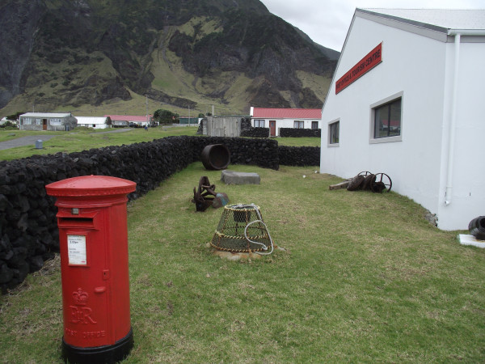
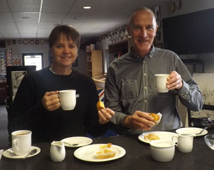
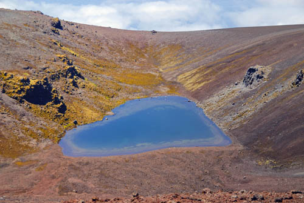
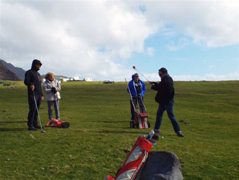

The Journey Begins Where Roads End

Post Office and Tourism Center
The Post Office and Tourism Center is the hub for island's visitors and tourists and islanders themselves.
The building is placed in the west of the settlement.
Post is no the only thing there, they're also selling various souvenirs and handicrafts.
The entrance is free
Cafe da Cunha
Cafe is situated in Tourism Center and welcomes all visitors with various drinks and snacks, that can be taken just from the table.
There's a lot of cases on the walls those are showing the island's history from different periods, including volcano eruption in 1961 and even earlier times.
The entrance is free


Love Island
Previously mentioned volcano known as Queen Mary's Peak - is yet another place for tourists to visit despite the terrifying feeling that this place gives.
Top of the volcano offers stunning view of the lake which replicates the form of heart - know as "Love Island".
But if you're not much into hiking - don't worry, more accessibly the islanders knit traditional "Love Socks" threaded with coloured stripes which can be interpreted as a hidden romantic messages for your loved ones.
The entrance is free
Other Attractions
There's also a lot of other attractions available for tourists.
Tourists can walk around the settlement or participate in organized walks.
Golf enthusiasts can play a round and earn a special Golf Club tie.
